Canada
Canada
North America · Buckwheat
Acadian ployes
Mild buckwheat, a little sour from the grain, with a holey top and a soft underside.
290 pancakes in this issue · Growing to 1,000
Travel journal · Issue 01
The invitation is a voyage. Balloon, plane, train, and boat. Each stop is a real pancake: a recipe that works, a history that stays inside what can be checked, and a note on why it tastes the way it does. This issue holds 290 pancakes. The journal is growing to 1,000.

Settlers, immigrants, and the griddle
Dutch buckwheat in the Hudson Valley, Pennsylvania Dutch potato cakes, English and Scots-Irish habits in Appalachia, Southeastern corn cakes, Lowcountry rice, and Scandinavian plates in the Upper Midwest.
32 pancakesSouth Asia
Fermented rice and lentil batters, gram-flour breakfasts, and the pancakes that go with chutney and sambar. Adai · Aloo paratha · Amboli.
26 pancakesEast Asia
Jianbing, scallion pancakes, okonomiyaki, and jeon, each tied to a city and a batter. Bindaetteok · Buchujeon · Cong you bing.
34 pancakesWestern Europe
Brittany, the British Isles, and the thin pancakes that use up eggs and fat before Lent. Breton crepes · Buckwheat galette · Crêpes Suzette.
290 pancakes
No pancakes match. Clear a filter and try a country, a heat level, or a single ingredient.
Canada
North America · Buckwheat
Mild buckwheat, a little sour from the grain, with a holey top and a soft underside.
 India
India
South Asia · Lentil batter
A sturdy mixed-lentil pancake, peppery and hot from dried chile, with curry leaf in the batter.
 Denmark
Denmark
Northern Europe · Molded batter cake
Round Danish pancakes from a molded pan, cardamom, jam, and powdered sugar.
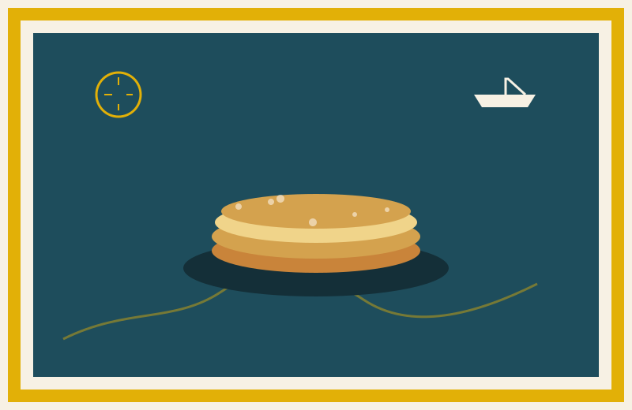
TurkeyMiddle East · Yeasted cake
Thin Aegean semolina pancakes with a tangy crumb, finished with walnuts and syrup.
 Afghanistan
Afghanistan
Central Asia · Stuffed pancake
Crisp stuffed flatbread filled with seasoned potato and leek, mild with green chile.
 Sweden
Sweden
Northern Europe · Egg skillet cake
A thick Scanian egg pancake, served with fried pork and lingonberries.
 Finland
Finland
Northern Europe · Oven pancake
A baked porridge pancake from Åland, cardamom-scented, with prune jam.
North America · Fermented batter
Mildly sour wheat cakes, a little richer from evaporated milk, with a browned edge.
North Africa · Stuffed pancake
Thin semolina flatbread folded around a tomato, onion, and chile filling.
South Asia · Stuffed pancake
A wheat flatbread stuffed with spiced potato, griddled in ghee until the surface is spotted and flaky.
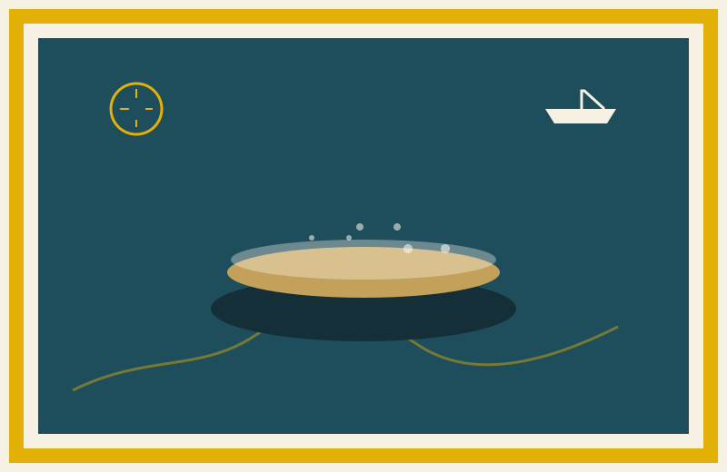
IndiaSouth Asia · Fermented batter
A soft, spongy, lightly sour rice pancake from the Konkan coast.
 Malaysia
Malaysia
Southeast Asia · Stuffed pancake
A turnover pancake folded over crushed peanuts, sugar, and a little butter.
 United States
United States
North America · Buckwheat
Earthly and slightly sour, with a gray-brown crumb and a sorghum finish if you use it at the table.
North America · Wheat batter
Soft wheat cakes with chewy, tart pieces of dried apple and a hint of cinnamon.
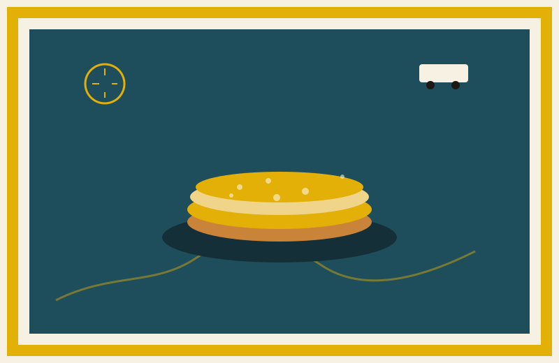
United StatesNorth America · Wheat batter
Malty and lightly bitter-sweet from sorghum, with a plain wheat crumb underneath.
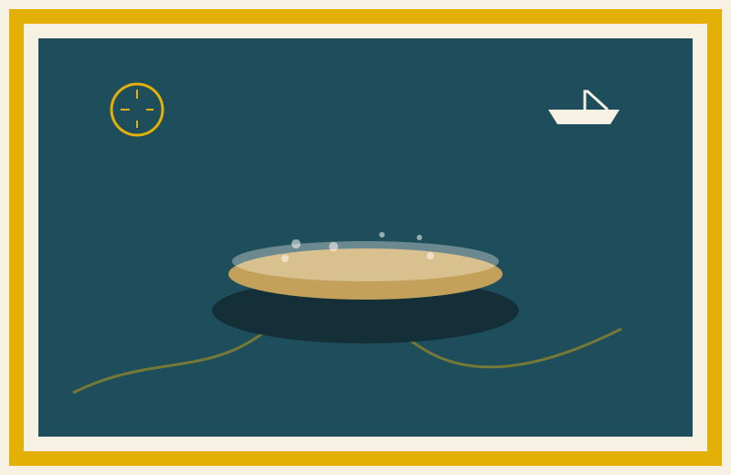
IndiaSouth Asia · Fermented batter
A bowl-shaped rice hopper with a lacy crisp rim, a spongy sweet center, and coconut in the batter.
North America · Wheat batter
Reduced sweet cider and soft apple pieces in a lightly spiced wheat cake.
 Colombia
Colombia
South America · Cornmeal cake
A lightly sweet highland cake of corn and wheat, studded with cuajada and cooked on a griddle.
 Colombia
Colombia
South America · Cornmeal cake
A thick sweet-corn cake with pockets of fresh cheese, griddled until the edges brown.
South America · Stuffed pancake
A fried corn cake with a whole egg cooked inside, crisp outside and set in the middle.
South America · Cornmeal cake
A thick yellow-corn cake, griddled, served with crisp pork chicharrón.
 Argentina
Argentina
South America · Crepe
Thin milk crepes rolled around dulce de leche, with a browned-butter edge.
 Australia
Australia
Oceania · Wheat batter
Wide, thin lemon-and-sugar pancakes with a lacy brown rim and a soft center.
 Australia
Australia
Oceania · Wheat batter
Small, thick drop pancakes with a soft crumb, eaten with butter and jam at tea.
 Azerbaijan
Azerbaijan
Caucasus · Stuffed pancake
Thin half-moon flatbread stuffed with herbs, finished with sumac.
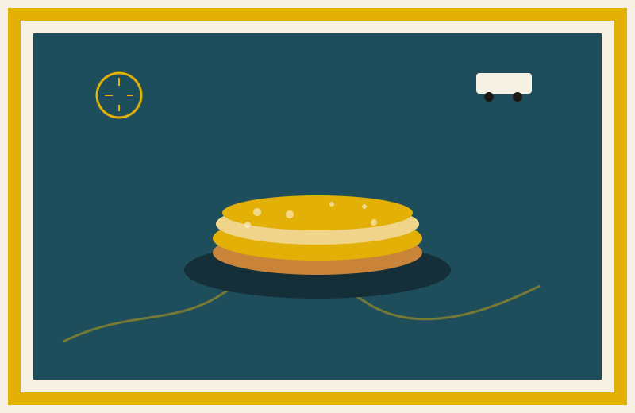
United StatesNorth America · Wheat batter
Salty, smoky bacon in a lightly sweet wheat pancake, cooked in bacon fat.
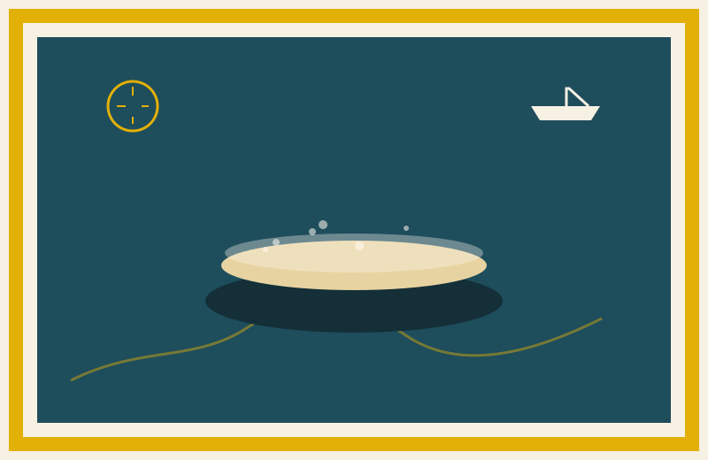
BahamasCaribbean · Griddled flatbread
A mildly sweet wheat cake, buttery, cooked covered in a skillet so the center steams.
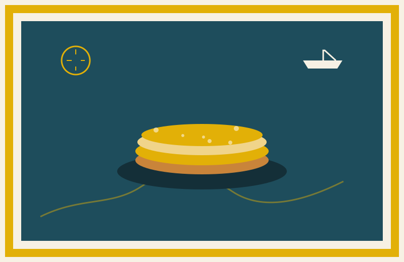
United StatesNorth America · Wheat batter
A plain buttermilk pancake under bananas in brown sugar, butter, cinnamon, and rum.
 Vietnam
Vietnam
Southeast Asia · Molded batter cake
Tiny crisp-edged rice cakes from a dimpled pan, each topped with a shrimp and a soft coconut center.
 Vietnam
Vietnam
Southeast Asia · Crepe
A turmeric-yellow rice crepe, crisp at the edge, filled with pork, shrimp, and bean sprouts.
 Spain
Spain
Southern Europe · Cornmeal cake
A griddled corn flatbread from the Basque Country, often wrapped around sausage or eaten with cider.
 Belarus
Belarus
Eastern Europe · Potato cake
Belarusian potato pancakes bound with potato starch and egg, sour cream on the side.
 India
India
South Asia · Lentil batter
A savory gram-flour pancake with onion, ajwain, and cumin, soft in the middle and spotted brown.
 South Korea
South Korea
East Asia · Lentil batter
A coarse mung-bean pancake with pork, sour kimchi, and a toasted sesame edge.
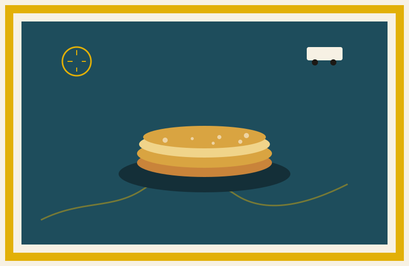
RussiaEastern Europe · Stuffed pancake
Thin Russian crepes rolled around a sweet farmer-cheese filling.
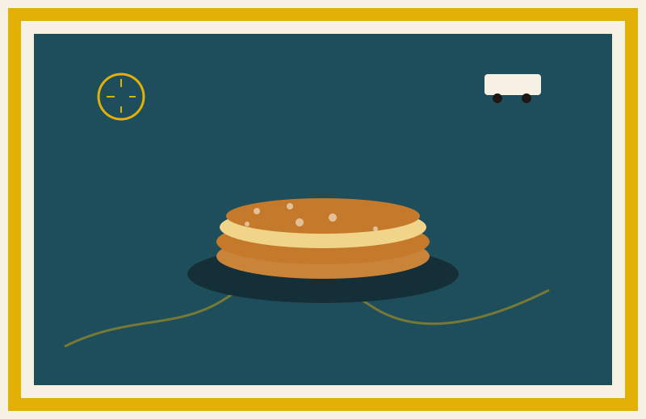
BoliviaSouth America · Pan-fried fritter
Puffed fried dough scented with anise, served beside a cup of api, not cooked in it.
 Brazil
Brazil
South America · Griddled flatbread
A plain tapioca flatbread, soft or crisp depending on how long it stays on the griddle, with almost no seasoning.
 Brazil
Brazil
South America · Crepe
Thin wheat crepes rolled around seasoned ground beef and a simple tomato sauce.
 Brazil
Brazil
South America · Crepe
A lacy crepe of hydrated tapioca starch, folded over fresh cheese, chewy and mild.
Western Europe · Crepe
Thin wheat crepes from Brittany, butter and sugar, the cake of Chandeleur.
East Asia · Wheat batter
A garlic-chive pancake, green and savory, with a light wheat crust and no seafood.
 Russia
Russia
Eastern Europe · Buckwheat
Yeasted buckwheat blini, earthier than the wheat cakes, for butter and sour cream.
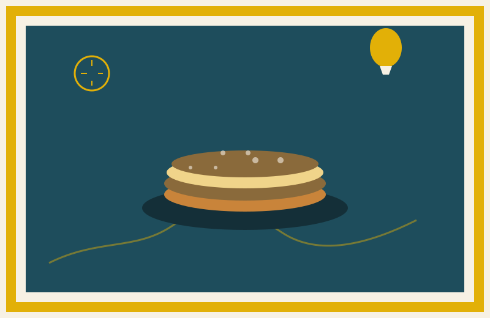
FranceWestern Europe · Buckwheat
A savory Breton buckwheat crepe, lacy and a little bitter, cooked on a billig.
 Bulgaria
Bulgaria
Eastern Europe · Crepe
Thin Bulgarian pancakes with yogurt in the batter, sweet or with white cheese.
South America · Cornmeal cake
Coarse sweet-corn pancakes folded over fresh white cheese, juicy rather than bready.
North America · Wheat batter
Tart cranberry pieces in a lightly sweet, orange-scented wheat cake.
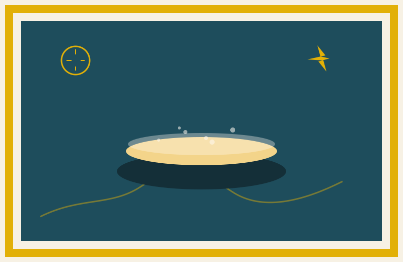
NepalNorth America · Stuffed pancake
A thin, lightly sweet pancake wrapped around tangy soft cheese and fried in butter.
 Chile
Chile
South America · Crepe
Thin wheat crepes filled with manjar and finished with a dry dust of powdered sugar.
 Chile
Chile
South America · Pan-fried fritter
Fried pumpkin rounds, crisp and puffed, eaten with pebre or with chancaca syrup.
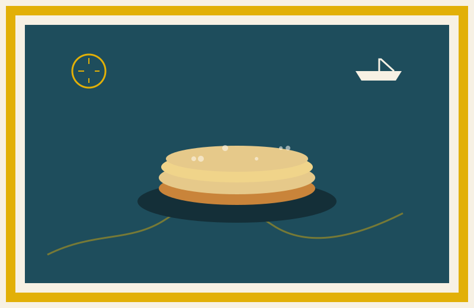
ChileSouth America · Potato cake
Pan-fried cakes of raw and cooked potato, salty, crisp at the edge, and dense inside.
South Asia · Molded batter cake
Small, soft rice cakes with a dimpled top, mild and a little sweet if date molasses is poured on.
North America · Wheat batter
A plain sweet pancake with pockets of melted semisweet chocolate.
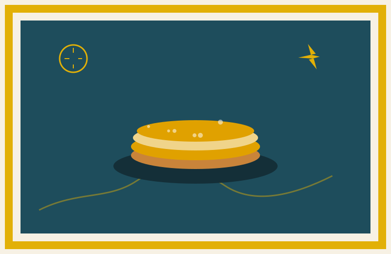
ColombiaSouth America · Cornmeal cake
A thinner white-corn arepa with cheese in the dough, buttered, beside tomato and scallion hogao.
East Asia · Griddled flatbread
A flaky wheat cake layered with scallion and oil, crisp outside and chewy within.
North America · Pan-fried fritter
Sweet corn, egg, and pepper, fried in small irregular cakes.
Mexico & Central America · Masa cake
Soft, toasted corn with a faint mineral note from nixtamal, cooked dry on a hot comal.
 Costa Rica
Costa Rica
Mexico & Central America · Cornmeal cake
Sweet fresh-corn pancakes, lightly eggy, served with sour cream.
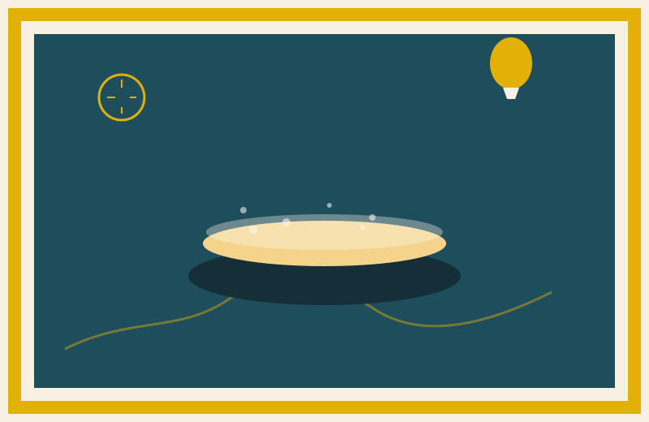
FranceSouthern Europe · Crepe
Italian crepes, plain or baked. Crespelle alla fiorentina is one variation, not the only form.
 Croatia
Croatia
Eastern Europe · Stuffed pancake
Croatian crepes rolled with fresh cheese, lemon, and raisins.
 Cuba
Cuba
Caribbean · Egg skillet cake
Day-old bread soaked in egg and milk, fried, and finished with cinnamon syrup and a splash of wine.
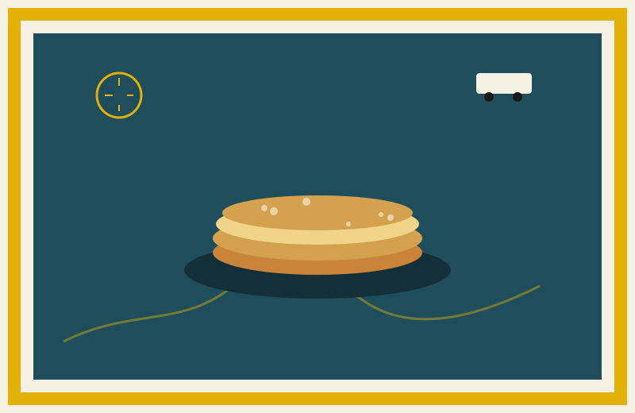
CzechiaEastern Europe · Yeasted cake
Small yeasted Czech pancakes served with quark and jam, not rolled.
 Czechia
Czechia
 Indonesia
Indonesia
Southeast Asia · Stuffed pancake
A green pandan crepe rolled around grated coconut and palm sugar.
 Denmark
Denmark
 United Kingdom
United Kingdom
Western Europe · Yeasted cake
A yeasted oatmeal pancake from Derbyshire, a little thicker than the Staffordshire shop cake.
Eastern Europe · Potato cake
Ukrainian grated-potato pancakes, fried crisp and served with sour cream.
North America · Wheat batter
Mild, buttery, and lightly sweet, with more browned edge than center because the cakes are small.
East Africa · Fermented batter
Small, holey breakfast cakes, mildly sour, with a soft wheat crumb.
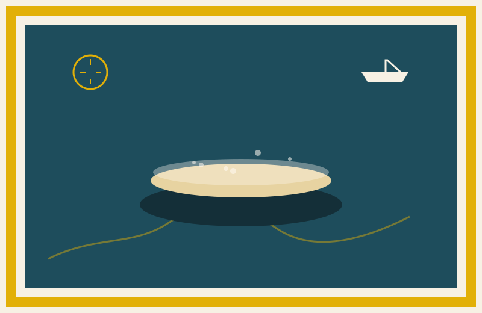
Dominican RepublicCaribbean · Griddled flatbread
A thin, dry cassava flatbread, lightly salty, crisp at the edge and bland in a way that suits a stew.
 Dominican Republic
Dominican Republic
Caribbean · Griddled flatbread
Small wheat rounds, salty and toasted, cooked in a slick of oil until both sides spot.
 Japan
Japan
East Asia · Wheat batter
Two small golden-brown pancakes sandwiched around sweet red bean paste.
Western Europe · Wheat batter
Three small Dutch pancakes in the pan, with apple in the batter.
North America · Oven pancake
Eggy, custardy in the center, and crisp at the lifted rim, with browned butter.
 Netherlands
Netherlands
Western Europe · Crepe
Large, thin Dutch pancakes, plate-sized, with syrup, apple, or bacon.
 United States
United States
North America · Egg skillet cake
A thick egg pancake with bean sprouts and onion, covered in a brown gravy.
South Asia · Molded batter cake
A coconut rice hopper with a soft egg set in the center, crisp at the rim.
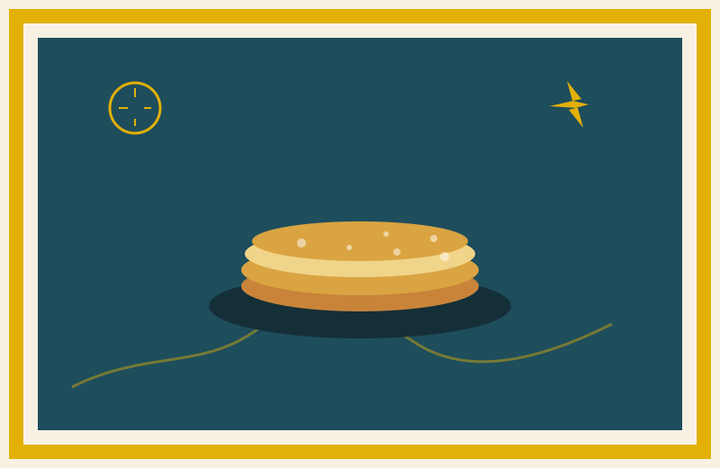
EgyptNorth Africa · Stuffed pancake
Yeasted pancakes stuffed with cinnamon walnuts and soaked in a lemon-rose syrup.
Middle East · Yeasted cake
Small yeasted pancakes perfumed with saffron and cardamom, served with date syrup.
Western Europe · Yeasted cake
Ring-cooked yeast cakes, toasted so butter sinks into the holes.
Western Europe · Yeasted cake
Small freeform yeast cakes with a holey top, toasted and buttered.
 United Kingdom
United Kingdom
Western Europe · Crepe
Thin egg pancakes, lemon and sugar, made to clear the kitchen before Lent.
East Africa · Fermented batter
Sour teff flatbread with a spongy top, meant to carry tsebhi.
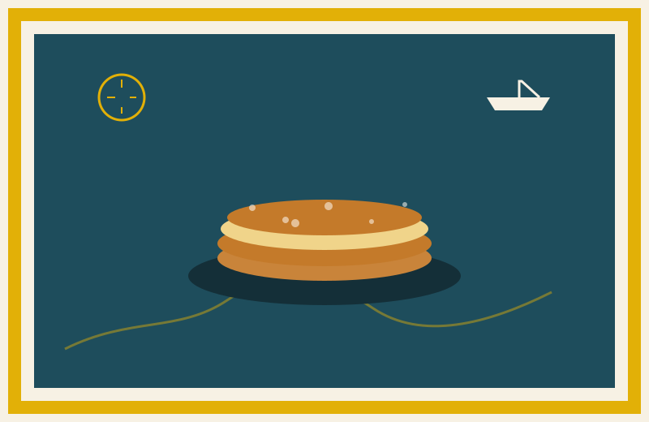
EstoniaEastern Europe · Pan-fried fritter
Small fried cakes of Estonian kohupiim, a curd cheese, with jam.
 Ethiopia
Ethiopia
East Africa · Griddled flatbread
Mild, soft teff flatbread with a light toasted face and no sour ferment.
 Italy
Italy
Southern Europe · Griddled flatbread
Ligurian chickpea flatbread, baked thick enough to stay creamy, with oil and pepper.
Eastern Europe · Pan-fried fritter
The older Ashkenazi Hanukkah pancake, made of farmer cheese rather than potato.
 France
France
Western Europe · Stuffed pancake
A Picardy crepe rolled around ham and mushrooms in cream, then baked with cheese.
Oceania · Pan-fried fritter
Soft yeasted dough, fried, with a mild sweetness and a pale, airy center.
 Philippines
Philippines
Southeast Asia · Wheat batter
Soft wheat breakfast pancakes, browned in margarine and eaten with sugar or condensed milk.
Southern Europe · Crepe
Thin Galician Carnival pancakes, scented with anise, rolled with sugar.
 Finland
Finland
Northern Europe · Crepe
Thin Finnish pancakes, served with jam, sugar, or whipped cream.
Western Europe · Wheat batter
Thick Flemish pancakes, finished with brown sugar and butter.
 Netherlands
Netherlands
 Albania
Albania
Eastern Europe · Oven pancake
A layered Albanian batter dish, baked in many thin sheets until the top is golden.
North America · Pan-fried fritter
Sweet ripe plantain, a little cinnamon, and a fried edge.
Mexico & Central America · Griddled flatbread
Soft, wheaty, and a little rich from fat, with browned spots and a flexible crumb.
Southern Europe · Crepe
Asturian Carnival pancakes, a little richer than Galician filloas, with lemon.
 France
France
Western Europe · Stuffed pancake
A buckwheat galette with ham, cheese, and an egg cooked in the middle.
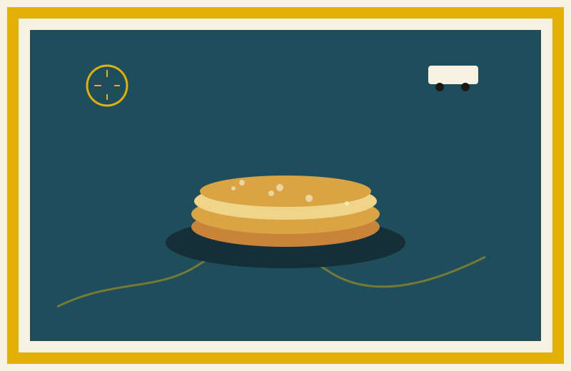
FranceWestern Europe · Stuffed pancake
A pork sausage rolled in a buckwheat galette, the Rennes street snack.
 South Korea
South Korea
East Asia · Potato cake
A pan-fried potato cake, crisp at the lace and soft inside, with scallion and sesame.
Middle East · Stuffed pancake
Crisp layered flatbread filled with pistachio and kaymak, which is clotted cream.
 United States
United States
North America · Wheat batter
Juicy ripe peach against a tangy buttermilk crumb, sweet but not candied.
 Georgia
Georgia
Caucasus · Cornmeal cake
Dense cornmeal cakes with a toasted crust and a mildly sweet grain center.
 Germany
Germany
Western Europe · Crepe
Thin German egg pancakes. In Berlin, do not call them Pfannkuchen.
 Ghana
Ghana
West Africa · Pan-fried fritter
Sweet ripe plantain fritters with ginger and a mild chile warmth, fried until the edges crisp.
North America · Wheat batter
Dark molasses, ginger, cinnamon, and clove in a soft wheat cake.
 India
India
South Asia · Crepe
A thin, tender crepe rolled around fresh coconut and jaggery, with cardamom in the filling.
 Mexico
Mexico
Mexico & Central America · Stuffed pancake
Thick toasted masa, split and filled with mashed beans, fresh cheese, and a mild salsa.
 Greece
Greece
Southern Europe · Wheat batter
Small Greek fried pancakes finished with honey and cinnamon.
 South Korea
South Korea
East Asia · Wheat batter
A crisp scallion pancake threaded with shrimp and squid, mild chile in the dip.
Caribbean · Pan-fried fritter
Fried grated malanga, herb-heavy and crisp, with a soft center that has to be cooked through.
North America · Wheat batter
Ripe banana and toasted macadamia in a rich diner hotcake.
 Japan
Japan
East Asia · Crepe
A layered savory crepe: thin batter, a mound of cabbage, noodles, pork, and egg, finished with sauce.
 Honduras
Honduras
Mexico & Central America · Griddled flatbread
A soft griddled wheat tortilla folded over refried beans and crumbled cheese.
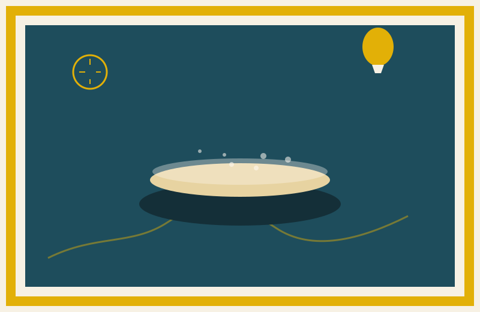
United StatesNorth America · Griddled flatbread
Very thin toasted blue corn, delicate and dry enough to fold, with a mineral note if ash is used.
Eastern Europe · Stuffed pancake
Hungarian crepes filled with paprika chicken, folded, and baked with sour cream.
 South Korea
South Korea
East Asia · Stuffed pancake
A chewy street pancake split by molten brown sugar, cinnamon, and walnut.
North America · Buckwheat
Sour, earthy buckwheat with a molasses edge and a crisp griddle face.
 Hungary
Hungary
 Iceland
Iceland
Northern Europe · Wheat batter
Small thick Icelandic pancakes with rye, buttered and sugared.
 Iceland
Iceland
Northern Europe · Crepe
Very thin Icelandic pancakes, rolled with sugar or rhubarb jam.
 Japan
Japan
East Asia · Molded batter cake
A round filled cake cooked in a hinged iron, with sweet red bean paste sealed inside a soft wheat shell.
North America · Cornmeal cake
Soft corn, milk, and egg, with only a little wheat to hold the cake.
 Ethiopia
Ethiopia
East Africa · Fermented batter
Sour, spongy teff bread with an earthy crumb and open holes on top.
Western Europe · Potato cake
Pan boxty: raw grated potato and mashed potato, fried as cakes.
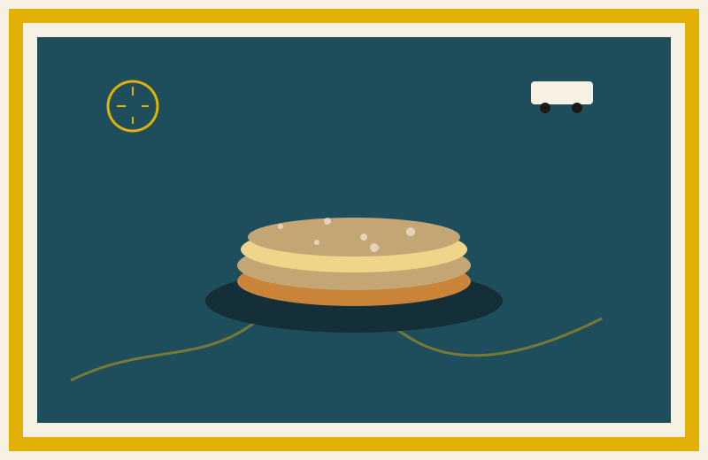
IrelandWestern Europe · Oat cake
Soft oatmeal pancakes with buttermilk, a breakfast cake from Irish kitchens.
 Ireland
Ireland
Western Europe · Potato cake
Mashed-potato farls, cut in quarters and cooked on a griddle.
 Jamaica
Jamaica
Caribbean · Griddled flatbread
A dense, mild cassava round, dry and toasted on the outside, then fried so the edge crisps.
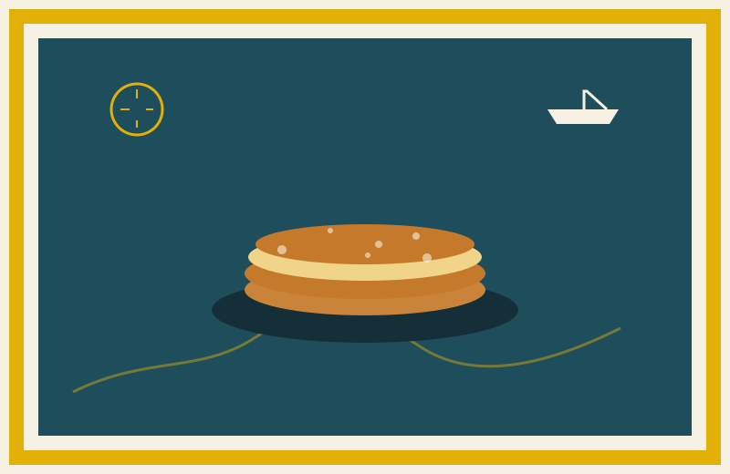
JamaicaCaribbean · Pan-fried fritter
Sweet cornmeal and wheat dumplings, fried until deep gold, with a soft center.
 Japan
Japan
East Asia · Wheat batter
Thick, soft cafe hotcakes with a browned top, butter, and syrup, taller than a thin crepe and gentler than a souffle cake.
Caucasus · Stuffed pancake
A thin griddled flatbread packed with a large handful of salted herbs and greens.
South Asia · Fermented batter
A pale sorghum dosa, mildly sweet and peppery, with a dry crisp edge.
Western Europe · Wheat batter
A torn, caramelized Austrian pancake with raisins and plum compote.
Western Europe · Potato cake
Shredded German potato pancakes, crisp, with applesauce.
 Kenya
Kenya
East Africa · Griddled flatbread
Soft, flaky wheat flatbread with a lightly oiled, toasted surface.
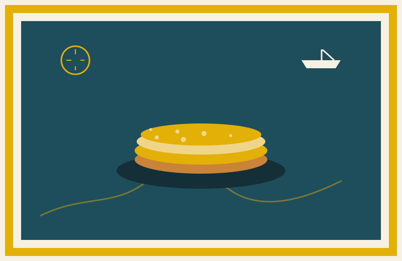
KenyaEast Africa · Molded batter cake
Yeasted rice cakes scented with coconut and cardamom, crisp on the curve and soft inside.
 Thailand
Thailand
Southeast Asia · Crepe
A crisp rice crepe folded around a sweet coconut-egg topping, lacy at the edge.
 Thailand
Thailand
Southeast Asia · Molded batter cake
Small coconut-rice cakes with a browned rim and a soft, sweet center, cooked in a dimpled pan.
 South Korea
South Korea
East Asia · Wheat batter
A tangy, medium-hot pancake of ripe kimchi in a wheat batter, crisp at the edge.
 Sweden
Sweden
Northern Europe · Wheat batter
A simple pork and flour pancake from the charcoal woods of central Sweden.
Southeast Asia · Molded batter cake
A small coconut-rice cake with a crisp rim and a soft center that sinks into a crater.
Middle East · Egg skillet cake
A dense herb frittata, bright green inside, with walnut and a sour note from barberries.
South Asia · Molded batter cake
Small fermented rice-and-urad balls, crisp outside, soft inside, with mustard seed and curry leaf.
North America · Cornmeal cake
Crisp, salty corn with a brittle lace of holes and a tender spot in the middle.
 United Kingdom
United Kingdom
Western Europe · Potato cake
Thick mashed-potato cakes, fried, from Lancashire breakfasts.
 Latvia
Latvia
Eastern Europe · Potato cake
Latvian pancakes of half mashed and half raw potato, with dill, fried in butter.
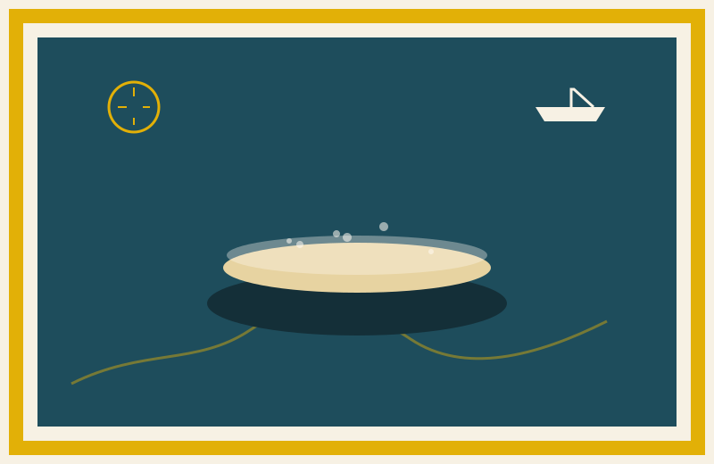
LebanonMiddle East · Griddled flatbread
Soft round flatbread topped with thyme, sumac, sesame, and olive oil.
North America · Wheat batter
Soft, custardy ricotta cakes with bright lemon zest and a light crumb.
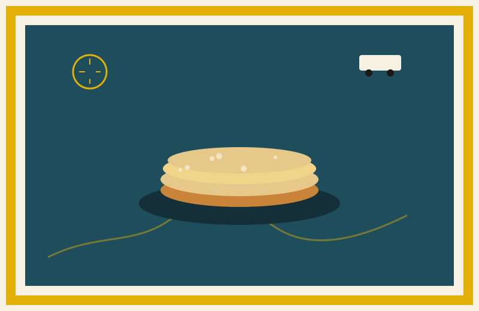
LithuaniaEastern Europe · Potato cake
Lithuanian potato pancakes with kefir in the batter, fried and served with sour cream.
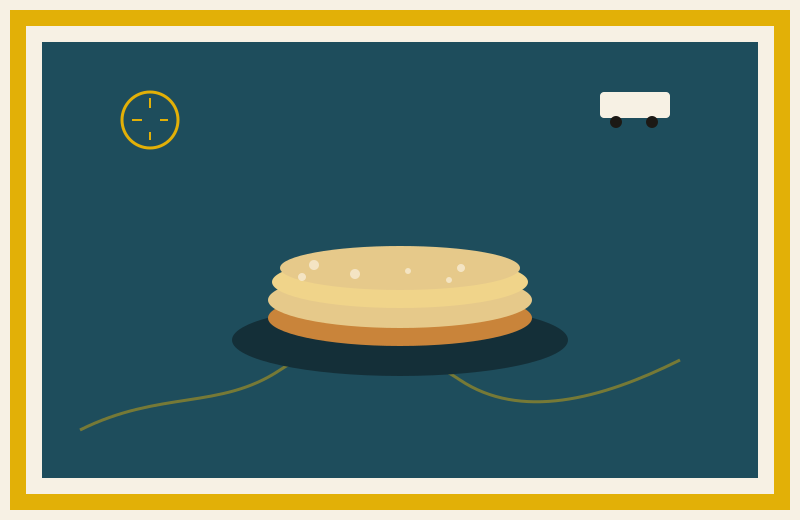
EcuadorSouth America · Potato cake
Pan-fried potato cakes with cheese inside and a mild peanut sauce over the top.
North America · Rice batter
Soft, lightly sweet rice cakes with a crisp buttered edge and separate grains in the crumb.
 United States
United States
North America · Wheat batter
Tart wild blueberries bursting into a buttered, lightly sweet wheat cake.
 Israel
Israel
Middle East · Griddled flatbread
Flaky laminated flatbread, salty and toasted, with a pull-apart layer at the edge.
 India
India
South Asia · Pan-fried fritter
A fried sweet pancake, fennel-scented, soaked in sugar syrup until the edges lacquer.
East Asia · Griddled flatbread
Very thin wheat pancakes, soft and faintly sesame-scented, made to wrap crisp duck skin and meat.
Middle East · Griddled flatbread
Paper-thin wheat flatbread, soft and lightly smoky from a few seconds on a dome.
 Indonesia
Indonesia
Southeast Asia · Wheat batter
A thick, sweet pancake, also called terang bulan, topped with chocolate, cheese, and peanuts.
 Indonesia
Indonesia
Southeast Asia · Stuffed pancake
A thin, crisp wheat skin folded around a juicy filling of egg, seasoned beef, and onion.
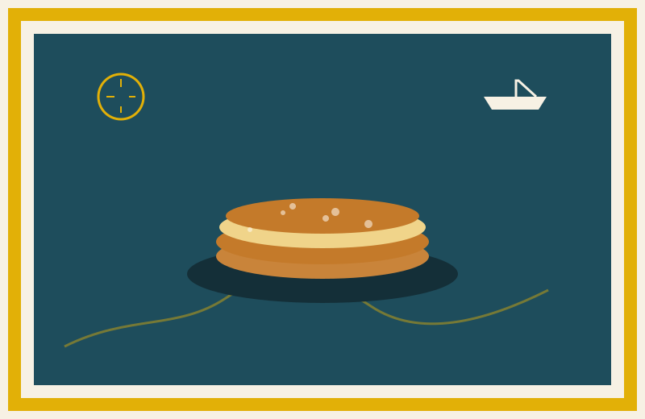
MartiniqueCaribbean · Pan-fried fritter
Salt-cod fritters in a wheat batter, garlicky and medium-hot, fried until the crust shatters.
 India
India
South Asia · Fermented batter
A fermented rice-and-urad sheet wrapped around a turmeric potato filling, with curry leaf and green chile.
 United States
United States
North America · Egg skillet cake
Soft scrambled egg bound around soaked matzo, salty and toasted in butter.
East Africa · Crepe
Thin French Creole crepes with a vanilla batter, folded over brown sugar.
East Asia · Buckwheat
A nutty buckwheat pancake, earthy and a little bitter, bound with egg and scallion.
Mexico & Central America · Pan-fried fritter
Thin, crisp fried dough with anise, broken into shards and soaked with piloncillo and cinnamon syrup.
 Mexico
Mexico
Mexico & Central America · Wheat batter
Soft wheat cakes with browned butter, finished with cajeta, honey, or condensed milk.
 United States
United States
North America · Wheat batter
Tart cherry against a lightly sweet buttermilk cake.
 United States
United States
North America · Wheat batter
A wheat pancake with chewy, toasted grains of wild rice scattered through it.
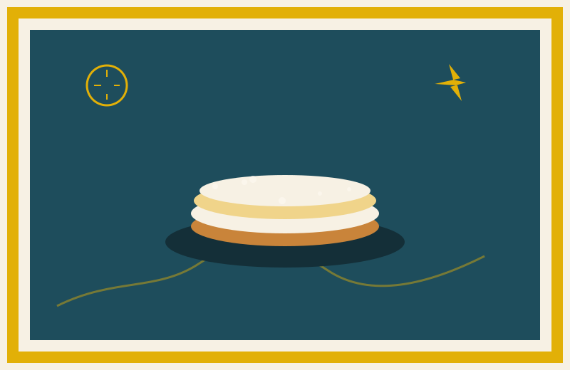
Madagascar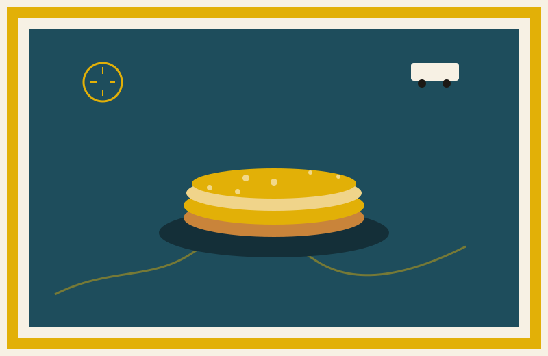
United StatesNorth America · Wheat batter
Strong, dark molasses in a tender wheat crumb, bittersweet rather than floral.
 Japan
Japan
East Asia · Wheat batter
A loose, runny savory batter cooked on a griddle and eaten while it is still half set.
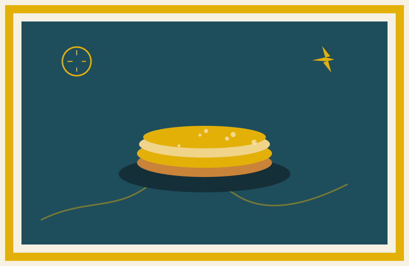
MyanmarSoutheast Asia · Molded batter cake
A pair of small rice cakes from a dimpled pan, one plain and one topped with split peas and shallot, joined together.
 India
India
South Asia · Lentil batter
A soft yellow-lentil pancake, bright with ginger and green chile, less nutty than a besan cheela.
 Morocco
Morocco
North Africa · Yeasted cake
Spongy semolina cakes, yeasted and sour-sweet, soaked with butter and honey.
North Africa · Griddled flatbread
Crumbly semolina pan bread, buttery and lightly salty, with a toasted crust.
North Africa · Griddled flatbread
Flaky, lightly salty layered flatbread with toasted semolina between the folds.
 India
India
South Asia · Fermented batter
A crisp fermented dosa spread inside with red chile-garlic chutney and a line of potato masala.
Eastern Europe · Stuffed pancake
Ukrainian crepes rolled with cheese and baked in sour cream.
 United States
United States
North America · Pan-fried fritter
Fried wheat dough, blistered and salty, crisp outside and soft inside.
 India
India
South Asia · Rice batter
A soft, pale, almost translucent rice roll with a clean cereal taste and no sour ferment.
East Asia · Wheat batter
A scallion-heavy savory pancake, sweeter and greener than cabbage okonomiyaki, with a soft wheat crumb.
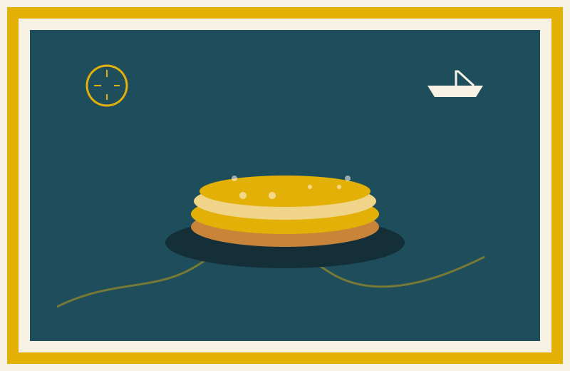
IndiaSouth Asia · Molded batter cake
A sweet, dense rice cake scented with banana, jaggery, cardamom, and ghee.
North America · Cornmeal cake
Coarse corn and molasses against a tangy buttermilk crumb.
North America · Cornmeal cake
Toasted blue corn in a tender buttermilk cake, nutty and a little sweet.
North America · Pan-fried fritter
Fried rice fritters, lightly sweet, with nutmeg and a powdered-sugar coat.
 New Zealand
New Zealand
Oceania · Wheat batter
Small tea-table pikelets with a golden edge, finished with butter and golden syrup.
North America · Pan-fried fritter
Fried bread dough, crisp at the rim, with salt pork and a side of molasses.
 Nicaragua
Nicaragua
Mexico & Central America · Cornmeal cake
Thick young-corn pancakes with cuajada folded in, savory and a little milky, barely sweet.
 Nigeria
Nigeria
West Africa · Molded batter cake
Mildly sour rice cakes with crisp rims and a soft, slightly sweet center.
 France
France
Western Europe · Stuffed pancake
Wheat crepes filled with apples cooked in butter, a Normandy dessert.
 Norway
Norway
Northern Europe · Potato cake
Potato lefse, rolled thin and griddled, soft enough to fold with butter and sugar.
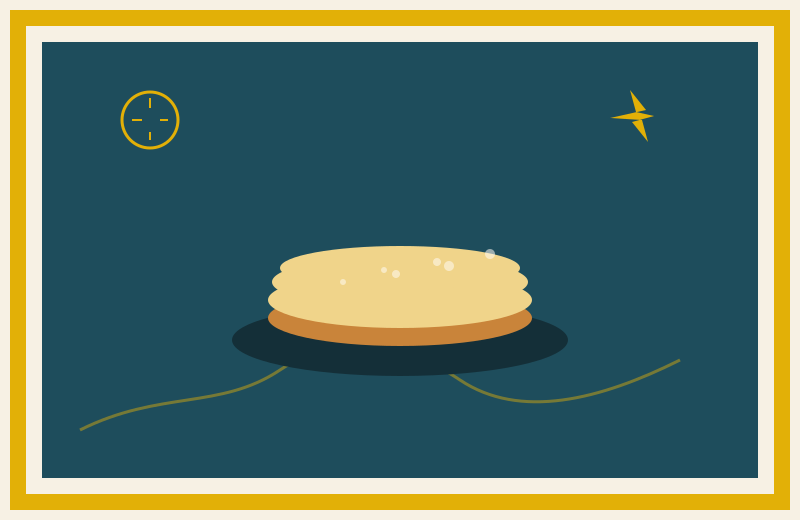
MexicoMexico & Central America · Masa cake
An elongated masa cake spread with oil, black beans, and a mild salsa, toasted at the edges.
 Russia
Russia
Eastern Europe · Wheat batter
Small thick Russian pancakes on kefir, quicker than yeasted blini.
South Asia · Wheat batter
Crisp semolina lace crowded with sweet onion, green chile, and curry leaf.
 Japan
Japan
East Asia · Wheat batter
A thick savory pancake with cabbage mixed into the batter, topped with sauce, mayonnaise, and bonito flakes.
 South Korea
South Korea
East Asia · Wheat batter
A savory wheat pancake packed with scallion, crisp at the rim and tender in the middle.
 India
India
South Asia · Lentil batter
A green spinach and gram-flour pancake, savory with ginger and cumin, soft rather than crisp.
 India
India
South Asia · Fermented batter
A very large, very thin fermented rice sheet that shatters at the edge and tastes toasted.
 Paraguay
Paraguay
South America · Griddled flatbread
A crisp griddled cake of manioc starch, cornmeal, and cheese, salty at the edge and tender in the middle.
Oceania · Pan-fried fritter
Fried wheat bread, puffed and crisp at the rim, with a soft, salty interior.
 India
India
South Asia · Stuffed pancake
A soft rice-and-wheat crepe rolled around a coconut and jaggery filling, fragrant with cardamom.
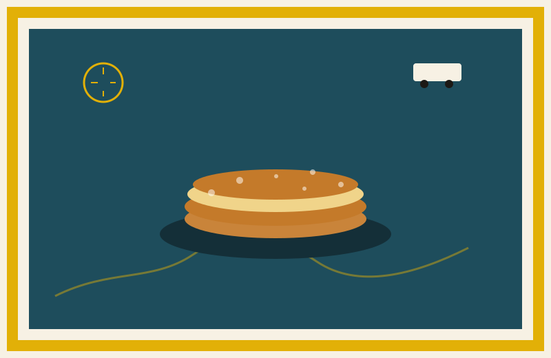
United StatesNorth America · Pan-fried fritter
Crisp fried batter, lightly eggy, buried under powdered sugar.
 United States
United States
North America · Potato cake
Shredded potato, onion, and pepper, crisp at the edge and soft in the middle.
South America · Griddled flatbread
A pan-fried cake of leftover rice and beans, garlicky, with a crisp face and mild ají amarillo.
 India
India
South Asia · Lentil batter
A green-gold moong dal pancake, herbal from ginger and green chile, with a soft crisp edge.
Southern Europe · Griddled flatbread
The griddled flatbread of Romagna. It is a flatbread, folded around a filling.
Eastern Europe · Potato cake
Polish potato pancakes, shredded and fried, with sugar or sour cream.
 India
India
South Asia · Fermented batter
Crisp at the edge, faintly sour, with a toasted rice smell and a soft underside.
 Netherlands
Netherlands
Western Europe · Molded batter cake
Small yeast pancakes from a dimpled Dutch pan, buttered and dusted with sugar.
South Asia · Griddled flatbread
A griddled coconut flatbread, lightly sweet from the coconut, with onion and green chile in the dough.
 Poland
Poland
Eastern Europe · Crepe
Thin Polish crepes with a sweet cheese filling, rolled and warmed.
Southern Europe · Crepe
Thin Portuguese crepes with orange zest, rolled with jam.
 Portugal
Portugal
Southern Europe · Egg skillet cake
Portuguese Christmas fried bread, soaked in milk and egg, with cinnamon sugar. Not a poured pancake.
Eastern Europe · Potato cake
Ashkenazi potato pancakes for Hanukkah, fried in oil, with the older cheese custom named beside them.
South Asia · Lentil batter
A turmeric-yellow Gujarati besan pancake, savory and a little sweet, eaten with chutney.
Caribbean · Pan-fried fritter
Fried rice-flour and cheese fritters, crisp at the edge, salty and chewy inside.
North America · Wheat batter
Soft pumpkin, cinnamon, and ginger in a lightly sweet wheat cake.
 El Salvador
El Salvador
Mexico & Central America · Stuffed pancake
Griddled masa stuffed with beans and melting cheese, served with tangy curtido and a light tomato salsa.
 Sweden
Sweden
Northern Europe · Potato cake
Crisp Swedish potato pancakes from raw grated potato, with lingonberries.
 India
India
South Asia · Fermented batter
An earthy, malt-dark finger-millet dosa with a mild chile edge and a crisp skin.
 India
India
South Asia · Wheat batter
A lacy, cracker-crisp semolina sheet scented with cumin, black pepper, and curry leaf.
North America · Cornmeal cake
Toasted corn, salt, and a crisp edge, with almost no sweetness in the cake itself.
 Romania
Romania
Eastern Europe · Crepe
Thin Romanian crepes with jam or sweet cheese, a home dessert.
 Malaysia
Malaysia
Southeast Asia · Griddled flatbread
A flaky, laminated wheat flatbread, griddled until the outside shatters and the inside stays stretchy.
 Russia
Russia
Eastern Europe · Yeasted cake
Yeasted wheat blini for Maslenitsa, butter week, with sour cream and butter.
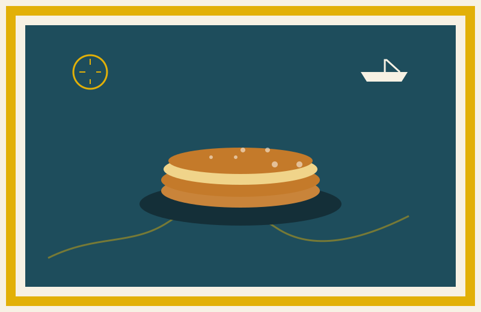
SamoaOceania · Pan-fried fritter
Round fried cakes, lightly sweet, with mashed banana in a soft wheat crumb.
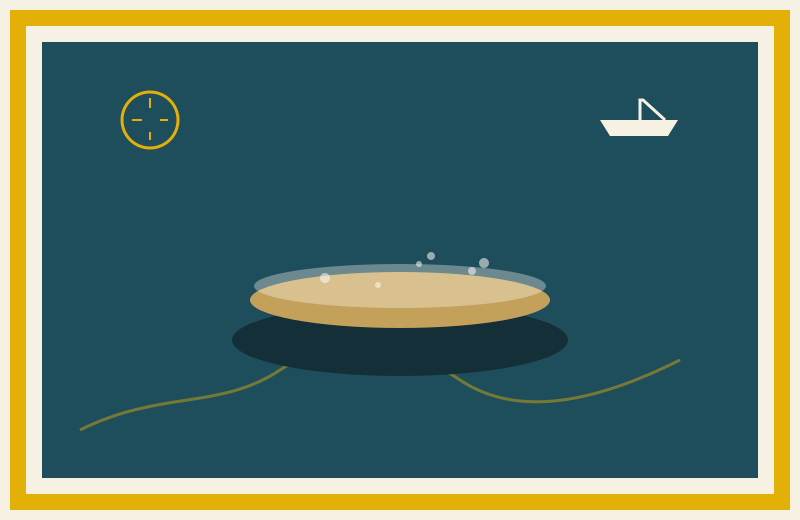
United StatesNorth America · Fermented batter
Tangy sourdough in a thin, buttered wheat pancake.
Middle East · Stuffed pancake
A thin, pan-fried stuffed flatbread with a savory leek and egg center and a mild chile edge.
 United Kingdom
United Kingdom
Western Europe · Wheat batter
Small thick drop scones from a Scottish girdle, butter and jam.
 United Kingdom
United Kingdom
 Indonesia
Indonesia
Southeast Asia · Rice batter
A small, thick coconut-rice pancake with a porous face, served with palm-sugar syrup.
 Serbia
Serbia
 India
India
South Asia · Fermented batter
Thick, soft, and mildly sour, with a spongy face and a pale golden underside.
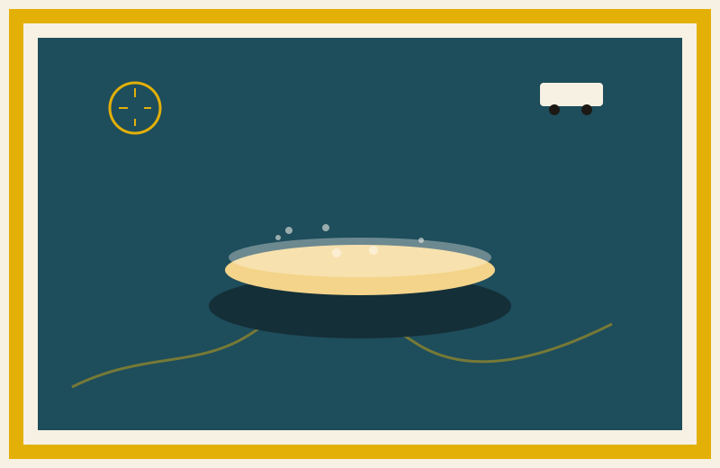
ChinaEast Asia · Crepe
A very thin, cracker-crisp crepe, torn into pieces and eaten with scallion and a savory paste.
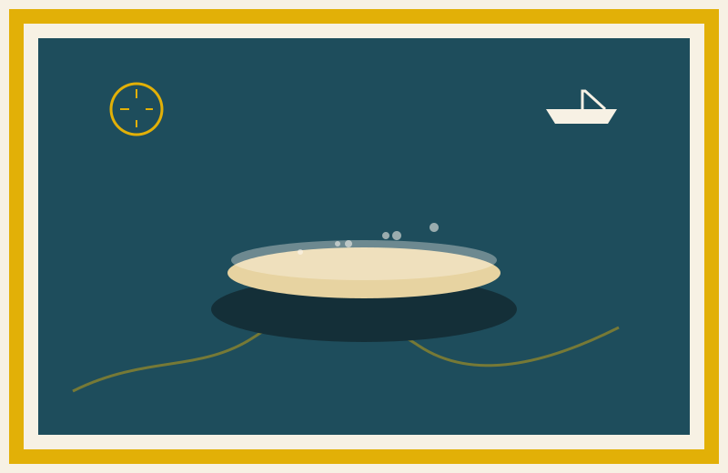
SingaporeSoutheast Asia · Griddled flatbread
A flaky laminated flatbread from a Singapore coffee shop, crisp at the edge and chewy inside, served with curry.
 United Kingdom
United Kingdom
Western Europe · Wheat batter
Currant griddle cakes from Northumberland. The fat sizzles, which is the singing.
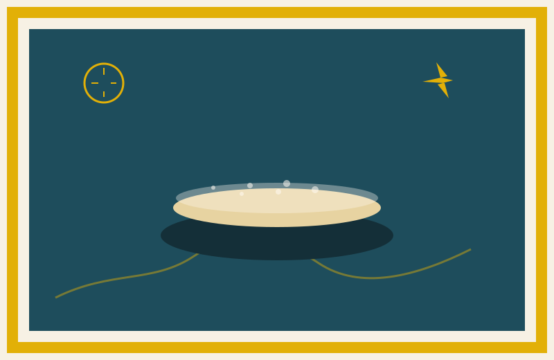
CanadaNorth America · Griddled flatbread
Plain wheat bread, slightly salty, with a fried face and a soft center.
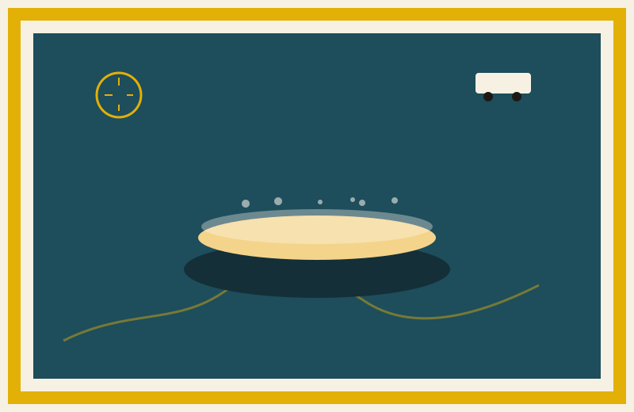
SlovakiaEastern Europe · Crepe
Thin Slovak crepes rolled with cocoa and sugar, a home filling without a brand of spread.
 France
France
Western Europe · Griddled flatbread
A crisp-edged chickpea flatbread from Nice, eaten hot with black pepper.
East Africa · Fermented batter
Soft, lightly sour wheat cakes full of small holes, mildly sweet at the edge.
 Mexico
Mexico
Mexico & Central America · Masa cake
A small thick masa base with a raised rim, topped with beans, cheese, onion, and salsa.
East Asia · Wheat batter
Extremely thick, jiggly pancakes with a browned cap and a soft, egg-white interior.
 South Africa
South Africa
Southern Africa · Crepe
Thin wheat pancakes rolled around cinnamon sugar, with a buttery edge.
North America · Cornmeal cake
Plain corn, salt, and a toasted surface, with no sugar and no wheat.
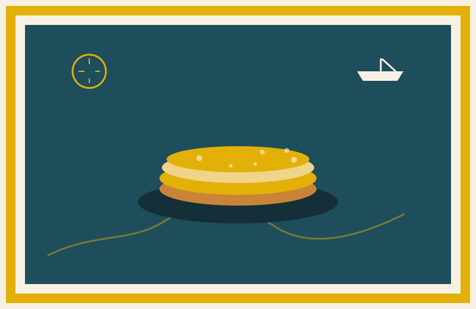
United StatesNorth America · Wheat batter
Ripe banana mashed into a tangy buttermilk pancake, soft and sweet.
 United States
United States
North America · Wheat batter
Tangy buttermilk, a little sugar, and a soft crumb with a browned rim.
North America · Cornmeal cake
Plain toasted corn, salt, and a fried edge, denser than a wheat pancake.
Southern Europe · Egg skillet cake
A potato omelet. It is not a pancake. This page says so and still cooks the omelet.
 Spain
Spain
Southern Europe · Wheat batter
Small thick Spanish pancakes with lemon, a home breakfast, not a tortilla.
 Netherlands
Netherlands
Western Europe · Buckwheat
A thick Groningen buckwheat pancake with bacon in the batter, served with syrup.
East Asia · Griddled flatbread
Soft wheat wrappers for the start of spring, rolled around shredded vegetables and a savory-sweet sauce.
South Asia · Crepe
A thin sweet crepe rolled with grated coconut and jaggery, meant for tea time.
 Sri Lanka
Sri Lanka
South Asia · Fermented batter
A crisp-edged rice bowl with a soft coconut center and a light ferment tang.
 United Kingdom
United Kingdom
Western Europe · Oat cake
Large, soft, yeasted oatmeal pancakes from the Potteries, rolled around a savory filling.
 Sudan
Sudan
East Africa · Fermented batter
Thin, tangy sorghum sheets with a flexible, faintly bitter grain taste.
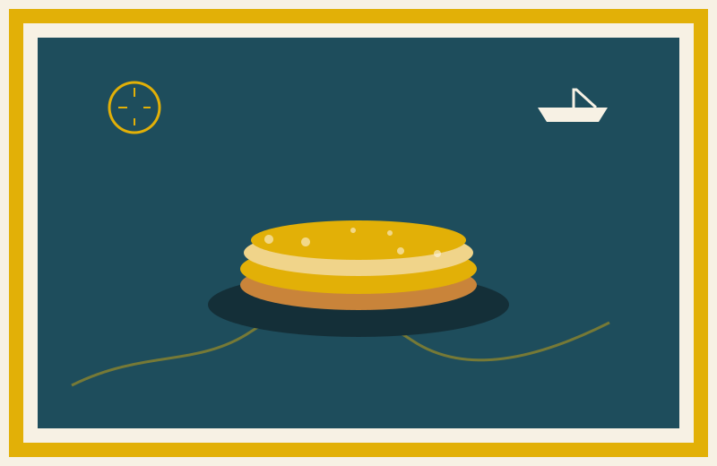
NorwayNorthern Europe · Wheat batter
Thick west-Norwegian pancakes, the ferry kiosk cake, with jam or brown whey cheese.
 Sweden
Sweden
Northern Europe · Crepe
Thin Swedish pancakes, pan-cooked, served with lingonberry jam.
 Sweden
Sweden
Northern Europe · Molded batter cake
Tiny Swedish pancakes from a plätt pan, with jam and cream.
 United States
United States
North America · Wheat batter
Orange-fleshed sweet potato, a little cinnamon, and a moist wheat crumb.
 Switzerland
Switzerland
Western Europe · Potato cake
A shredded potato cake from Switzerland, pan-fried as one round. Not a batter pancake.
 Russia
Russia
Eastern Europe · Pan-fried fritter
Pan-fried Russian farmer-cheese cakes, with sour cream and jam.
 Taiwan
Taiwan
East Asia · Crepe
A thin breakfast crepe with egg cooked on its face, brushed with soy sauce and rolled with scallion.
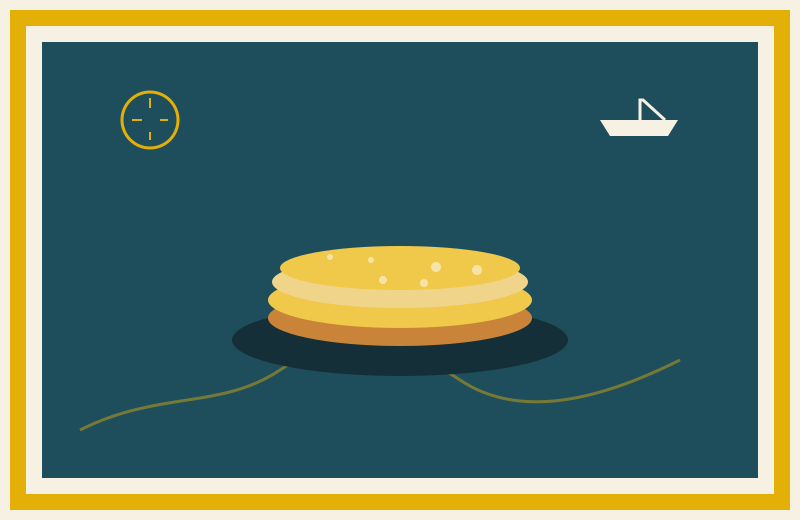
TaiwanEast Asia · Egg skillet cake
A soft, starch-set omelet crowded with oysters, finished with a sweet-savory sauce and greens.
East Asia · Molded batter cake
Crisp-edged batter balls with a piece of octopus in the center, finished with sauce and bonito.
 United Kingdom
United Kingdom
Western Europe · Potato cake
Thin potato triangles from a Scottish girdle, eaten at breakfast.
North America · Wheat batter
Buttered wheat cakes with toasted pecan, sweet and slightly bitter at the brown edge of the nut.
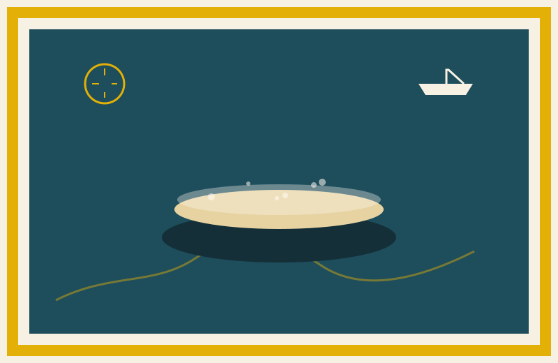
ThailandSoutheast Asia · Griddled flatbread
A stretched, griddled wheat bread, crisp and chewy, wrapped around banana and condensed milk.
 India
India
South Asia · Griddled flatbread
A hearty multigrain griddle bread, onion-flecked, with toasted millet and chickpea in the crumb.
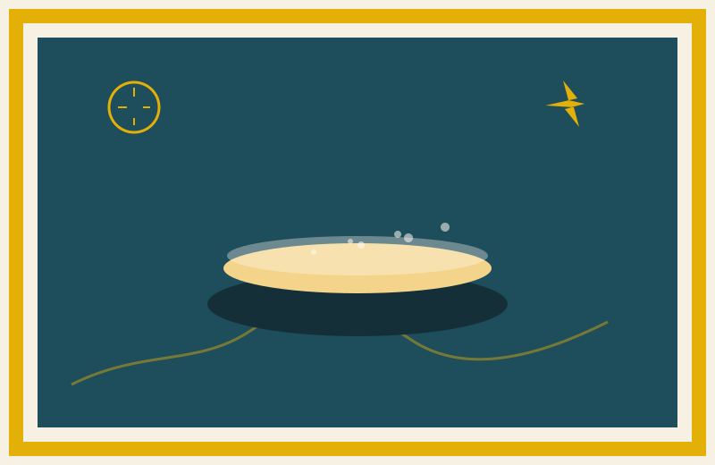
ChinaEast Asia · Crepe
A soft savory crepe wrapped around egg, sauce, herbs, and a shatter of crisp fried dough.
Mexico & Central America · Stuffed pancake
An oval masa cake with a seam of mashed beans, topped with nopales, onion, and salsa.
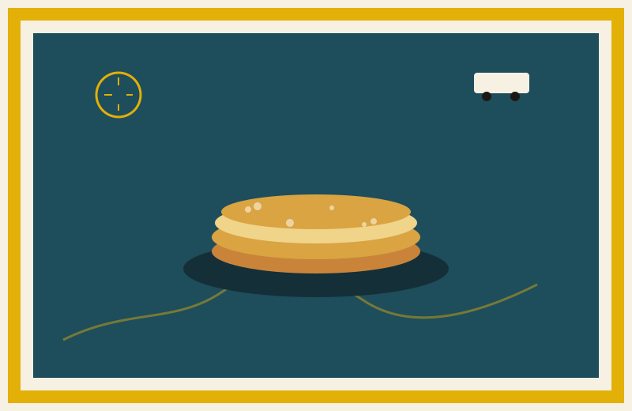
AustriaWestern Europe · Stuffed pancake
Austrian crepes filled with sweetened quark and baked until the cheese is warm.
 Spain
Spain
Southern Europe · Pan-fried fritter
Crisp Cádiz fritters of tiny shrimp and chickpea flour.
Caribbean · Griddled flatbread
A soft wheat roti with a layer of seasoned ground split peas that flakes when the bread is clapped.
North Africa · Griddled flatbread
Soft, oiled, layered round with a flaky edge and a mild wheat taste.
Middle East · Stuffed pancake
Thin stuffed flatbread, griddled, with spinach and salty white cheese in the fold.
Middle East · Egg skillet cake
A soft flour-and-egg skillet cake, herb-flecked, with a tender center and a browned rim.
East Asia · Rice batter
A savory daikon cake of rice flour, steamed until set, then pan-fried so the slices crust.
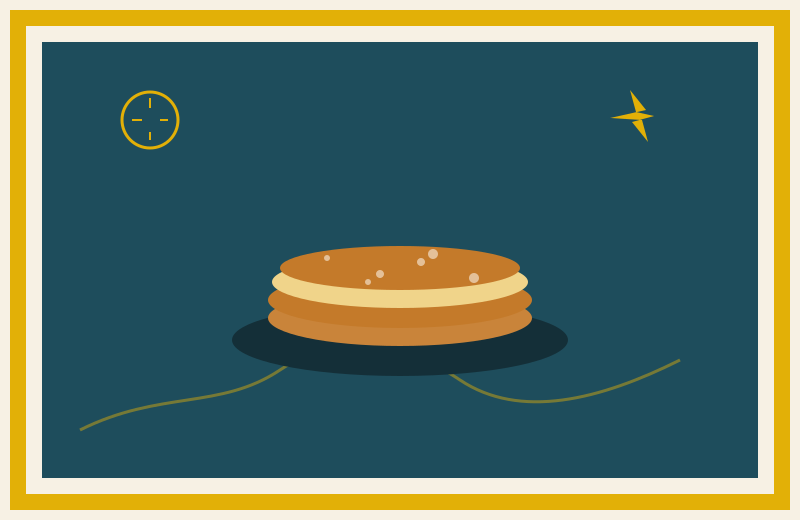
UgandaEast Africa · Pan-fried fritter
Sweet fried cakes of ripe banana and wheat flour, crisp outside and soft within.
Western Europe · Wheat batter
Griddled soda-bread farls from Ulster, cut in quarters.
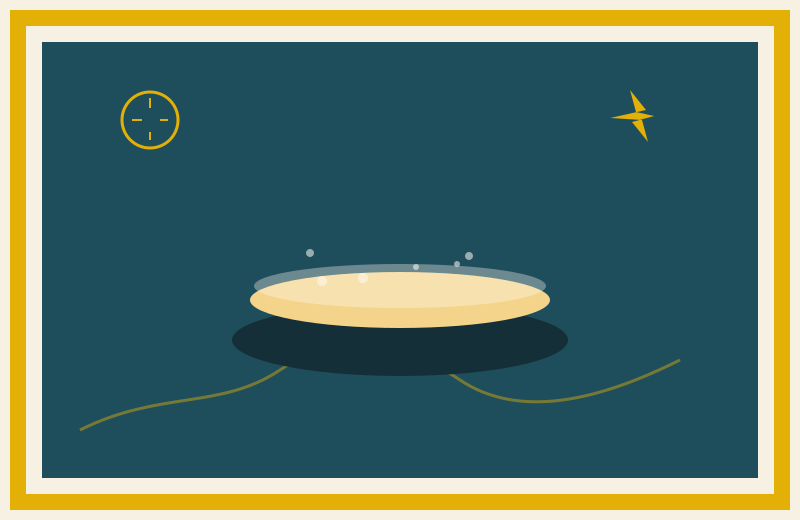
United StatesNorth America · Crepe
Thin, eggy, and lightly sweet, rolled around butter and jam.
South America · Crepe
Thin wheat crepes rolled with firm quince paste and a slice of fresh cheese.
 India
India
South Asia · Fermented batter
A thick, soft fermented cake topped with onion, tomato, and green chile.
 Venezuela
Venezuela
South America · Cornmeal cake
Thick white-corn cakes, griddled until they crackle, split and filled with fresh cheese.
 United States
United States
North America · Wheat batter
A mild wheat cake with real maple in the batter and a stronger maple pour on top.
Western Europe · Wheat batter
Welsh buttermilk griddle cakes, stacked with butter between the layers.
East Asia · Stuffed pancake
A round northern wheat cake sealed around a juicy pork and scallion filling, pan-fried until spotted.
 Yemen
Yemen
Middle East · Fermented batter
Spongy sorghum cakes, sour and earthy, with holes that hold beans or egg.
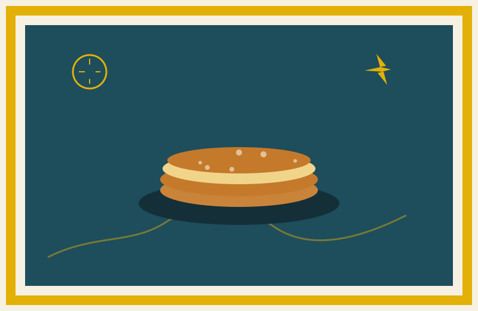
ZambiaSouthern Africa · Pan-fried fritter
Sweet coconut-rice fritters with a crisp fried crust and a soft grain center.